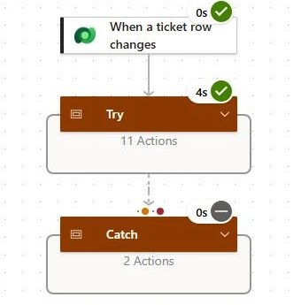
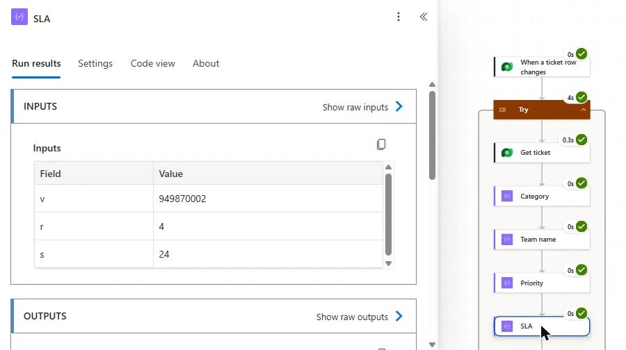
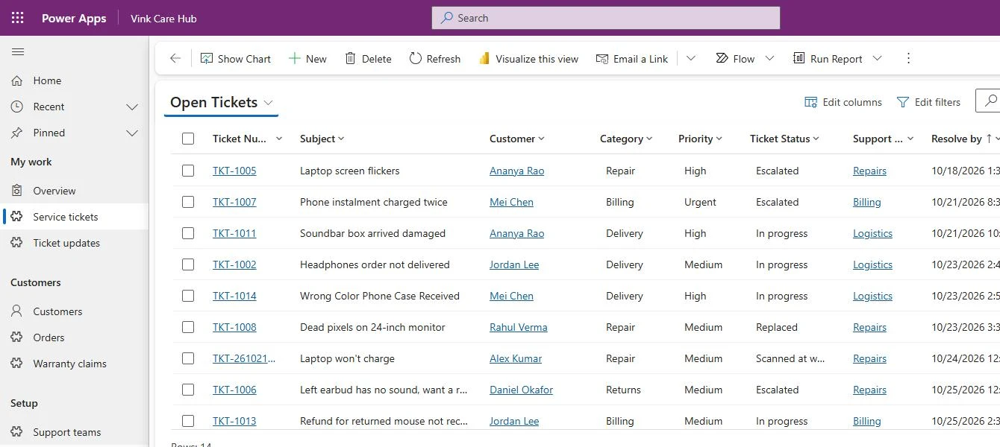

- Project deep dive
- Vink Customer Care Agent · Part 8 of 11
8 · Background flows: routing, SLA, timeline and email
Where this page fits
Highlighted boxes are what this page explains. The chain runs left to right, top row then bottom row.
From the root: why separate flows?
| Flow | Starts when | Does |
|---|---|---|
| Ticket Created | A ticket row is created | Fill team and SLA if missing, log Ticket created, email the customer, alert support for High/Urgent/VIP |
| Ticket Status Changed | vin_ticketstatus changes | Explain the new status, log it, update latest update, email the customer, stamp resolved on |
| Daily SLA Check | Every day (recurrence) | Flag overdue tickets, close stale ones, email the overdue report |
Ticket Created, step by step


Ticket Created for TKT-1020
| Step | Logic | Result |
|---|---|---|
| Needs routing? | No team or no resolve-by on the row? | no: already set by Create Ticket |
| Log created | New Ticket Update, visible to customer | timeline entry |
| Confirm to customer | No courier booking (warranty tickets get an RMA email instead) and an email exists | emailed |
| Alert if urgent | High, Urgent or VIP | support mailbox alerted |
Why recalculate SLA if Create Ticket already did? A ticket created by staff in Care Hub skips the agent completely. coalesce(existing value, createdon + hours) keeps values that are already set and fills the ones that are missing.
How the dots connect: the timeline Alex saw

Three parts, one answer
Ticket Status Changed: one message per status
Status → what the customer is told
| Status | Explanation sent |
|---|---|
| Awaiting return | Please send the product back using the return label we emailed you. |
| Scanned at warehouse | Your product has arrived at our warehouse and is with a technician. |
| Repaired | Your product has been repaired and is on its way back to you. |
| Awaiting customer | We need a reply from you to continue… |
| Escalated | A senior member of the team now owns your ticket… |
The explanations live in one Compose as an object; outputs('Explanations')?[status label] picks the right one, with a default. The trigger uses Select columns = vin_ticketstatus, so edits to other columns don't send emails. See Status-driven workflows.
Daily SLA Check
Every day
resolveby lt utcNow() → set Overdue = Yes
Try/catch and environment variables
| Feature | How | Why |
|---|---|---|
| Try / Catch scopes | Catch runs only if Try fails: email the support mailbox, then Terminate as Failed | Failures are noticed, and run history stays honest |
vin_CCSupportMailbox | Environment variable for alerts and the daily report | Different mailbox per environment, no edits to flows |
vin_CCCustomerEmailOverride | If set, every customer email goes here instead | Safe demos and tests; clear it in production |
Related: Dataverse triggers, Scopes and try/catch, Environment variables, Recurrence.
Common mistakes
- Business rules only in the agent flow: staff-created tickets miss them.
- Status triggers without a column filter.
- Hard-coded email addresses.
- No Catch: failures go unnoticed.